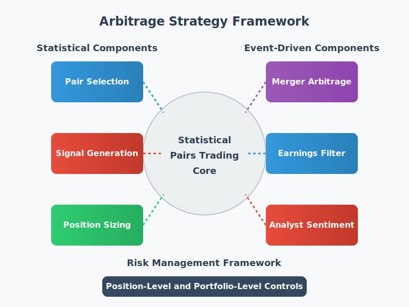
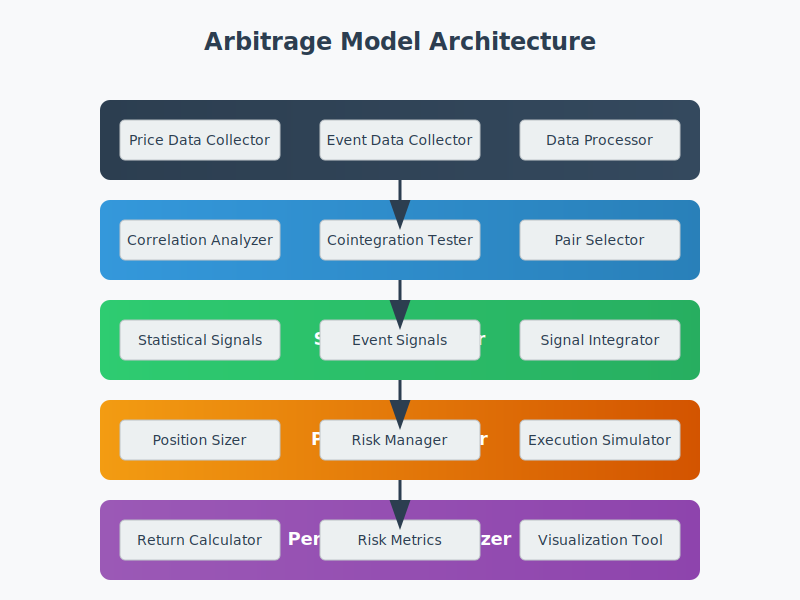

Arbitrage Strategy Framework

Figure 1: Arbitrage Strategy Framework Overview
1. Introduction
This document presents a comprehensive framework for implementing an arbitrage trading strategy that combines statistical methods with event-driven components. The framework is designed to identify and exploit price inefficiencies across financial markets while maintaining robust risk management controls.
Arbitrage trading seeks to profit from price discrepancies between related financial instruments. In perfectly efficient markets, such discrepancies would not exist, but real-world markets exhibit inefficiencies due to information asymmetry, market frictions, and behavioral biases. Our framework leverages these inefficiencies through a multi-faceted approach that balances statistical rigor with event-driven insights.
The core of our strategy is a statistical pairs trading model that identifies cointegrated securities and exploits temporary deviations in their price relationships. This statistical core is enhanced with event-driven components that leverage corporate events, insider trading patterns, and analyst sentiment to improve signal quality and manage risk around high-volatility events.
2. Framework Overview
Our arbitrage strategy framework consists of several integrated components that work together to identify, evaluate, and execute profitable trading opportunities. The key components include:
Core Philosophy
The framework is built on the following core principles:
- Statistical Foundation: Utilizing robust statistical methods to identify persistent relationships between securities.
- Multi-Factor Approach: Combining price-based signals with fundamental and event-driven factors.
- Risk Management Focus: Prioritizing capital preservation through strict risk controls.
- Adaptability: Continuously recalibrating to changing market conditions.
- Diversification: Spreading risk across multiple pairs and sectors.
Framework Components
The framework consists of four main components:
- Statistical Pairs Trading Core: The foundation of the strategy, identifying cointegrated pairs and generating trading signals based on statistical relationships.
- Event-Driven Components: Enhancing the statistical signals with event-based filters and indicators.
- Risk Management Framework: Comprehensive risk controls at both position and portfolio levels.
- Implementation Architecture: The technical infrastructure for data collection, signal generation, and execution.
Integration Approach
These components are integrated through a modular architecture that allows for:
- Signal Combination: Statistical and event-driven signals are combined using a weighted approach that considers signal strength and reliability.
- Risk Overlay: Risk management rules are applied as an overlay to all trading decisions.
- Feedback Loop: Performance metrics feed back into the system to optimize parameters and weights.
- Continuous Improvement: The framework is designed for ongoing refinement and adaptation.
3. Statistical Pairs Trading Core
The statistical pairs trading core is the foundation of our arbitrage strategy. It identifies pairs of securities with stable statistical relationships and generates trading signals based on deviations from these relationships.
3.1 Pair Selection
The pair selection process identifies securities with stable, mean-reverting relationships that can be exploited for arbitrage opportunities.
Methodology
- Universe Definition: Start with a universe of liquid securities, typically focusing on stocks within the same sector or industry to ensure fundamental similarity.
- Correlation Analysis: Calculate pairwise correlations between securities to identify potentially related pairs.
- Calculate rolling correlations over multiple timeframes (e.g., 30, 60, 90 days)
- Filter pairs with correlation coefficients above a threshold (e.g., 0.7)
- Cointegration Testing: Apply the Augmented Dickey-Fuller (ADF) test to identify cointegrated pairs.
- Test the stationarity of the spread between paired securities
- Filter pairs with p-values below a threshold (e.g., 0.05)
- Half-Life Calculation: Calculate the half-life of mean reversion for cointegrated pairs.
- Estimate the speed at which the spread reverts to its mean
- Filter pairs with half-lives within a desired range (e.g., 5-30 days)
- Fundamental Similarity Check: Verify that paired securities have similar fundamental characteristics.
- Compare business models, market cap, growth rates, and other relevant metrics
- Ensure pairs are exposed to similar risk factors
Implementation
def identify_pairs(symbols, correlation_threshold=0.7, pvalue_threshold=0.05,
min_half_life=5, max_half_life=30):
"""
Identify cointegrated pairs from a list of symbols
Parameters:
symbols (list): List of stock symbols to analyze
correlation_threshold (float): Minimum correlation coefficient
pvalue_threshold (float): Maximum p-value for cointegration test
min_half_life (int): Minimum half-life of mean reversion (days)
max_half_life (int): Maximum half-life of mean reversion (days)
Returns:
list: Pairs of cointegrated stocks with correlation and cointegration statistics
"""
# Load price data for all symbols
price_data = load_price_data(symbols)
# Calculate correlation matrix
correlation_matrix = calculate_correlation_matrix(price_data)
# Filter pairs based on correlation
correlated_pairs = filter_by_correlation(correlation_matrix, correlation_threshold)
# Test for cointegration
cointegrated_pairs = []
for pair in correlated_pairs:
symbol1, symbol2 = pair
# Get price series
series1 = price_data[symbol1]['close']
series2 = price_data[symbol2]['close']
# Calculate spread
spread = calculate_spread(series1, series2)
# Test for cointegration
adf_result = adfuller(spread)
adf_pvalue = adf_result[1]
if adf_pvalue < pvalue_threshold:
# Calculate half-life of mean reversion
half_life = calculate_half_life(spread)
# Filter by half-life
if min_half_life <= half_life <= max_half_life:
pair_info = {
'symbol1': symbol1,
'symbol2': symbol2,
'correlation': correlation_matrix.loc[symbol1, symbol2],
'adf_pvalue': adf_pvalue,
'half_life': half_life
}
cointegrated_pairs.append(pair_info)
return cointegrated_pairs
3.2 Signal Generation
Once cointegrated pairs are identified, we generate trading signals based on deviations from their statistical relationship.
Methodology
- Spread Calculation: Calculate the spread between paired securities.
- For price-based spreads: Spread = Price1 - (Beta * Price2)
- For return-based spreads: Spread = Return1 - (Beta * Return2)
- Z-Score Calculation: Calculate the z-score of the spread.
- Z-score = (Current Spread - Mean Spread) / Standard Deviation of Spread
- Use rolling windows for mean and standard deviation calculation
- Signal Generation: Generate trading signals based on z-score thresholds.
- Entry Signal: When z-score exceeds threshold in either direction
- Exit Signal: When z-score reverts to mean or crosses opposite threshold
- Signal Confirmation: Apply additional filters to confirm signals.
- Technical indicators (e.g., RSI, MACD)
- Volume filters to ensure liquidity
- Volatility conditions to manage risk
Implementation
def generate_signals(pair_info, price_data, z_entry_threshold=2.0, z_exit_threshold=0.5):
"""
Generate trading signals based on z-score of the spread
Parameters:
pair_info (dict): Pair information including symbols and beta
price_data (dict): Price data for all symbols
z_entry_threshold (float): Z-score threshold for entry signals
z_exit_threshold (float): Z-score threshold for exit signals
Returns:
DataFrame: Trading signals with timestamps
"""
symbol1 = pair_info['symbol1']
symbol2 = pair_info['symbol2']
beta = pair_info['beta']
# Get price series
series1 = price_data[symbol1]['close']
series2 = price_data[symbol2]['close']
# Calculate spread
spread = series1 - (beta * series2)
# Calculate rolling mean and standard deviation
window = 20 # 20-day rolling window
spread_mean = spread.rolling(window=window).mean()
spread_std = spread.rolling(window=window).std()
# Calculate z-score
z_score = (spread - spread_mean) / spread_std
# Generate signals
signals = pd.DataFrame(index=z_score.index)
signals['z_score'] = z_score
# Entry signals
signals['entry_long'] = (z_score < -z_entry_threshold).astype(int)
signals['entry_short'] = (z_score > z_entry_threshold).astype(int)
# Exit signals
signals['exit_long'] = ((z_score > -z_exit_threshold) | (z_score > z_entry_threshold)).astype(int)
signals['exit_short'] = ((z_score < z_exit_threshold) | (z_score < -z_entry_threshold)).astype(int)
# Apply additional filters
signals = apply_signal_filters(signals, pair_info, price_data)
return signals
3.3 Position Sizing
Proper position sizing is critical for risk management and optimal capital allocation.
Methodology
- Beta-Neutral Sizing: Calculate position sizes to achieve beta neutrality.
- Adjust for differences in beta between paired securities
- Ensure the portfolio has minimal exposure to market movements
- Dollar-Neutral Sizing: Ensure equal dollar amounts for long and short positions.
- Adjust for price differences between paired securities
- Maintain balance between long and short exposure
- Risk-Based Sizing: Adjust position sizes based on risk metrics.
- Scale positions based on spread volatility
- Allocate more capital to pairs with more stable relationships
- Consider correlation with existing positions
- Portfolio Allocation: Distribute capital across multiple pairs.
- Limit exposure to any single pair (e.g., 5-10% of portfolio)
- Diversify across sectors and industries
- Balance between different types of arbitrage opportunities
Implementation
def calculate_position_sizes(pair_info, signal, portfolio_value, max_allocation=0.1):
"""
Calculate position sizes for a pair trade
Parameters:
pair_info (dict): Pair information including symbols and beta
signal (dict): Signal information including direction and strength
portfolio_value (float): Total portfolio value
max_allocation (float): Maximum allocation to a single pair
Returns:
dict: Position sizes for each symbol in the pair
"""
symbol1 = pair_info['symbol1']
symbol2 = pair_info['symbol2']
beta = pair_info['beta']
# Get current prices
price1 = get_current_price(symbol1)
price2 = get_current_price(symbol2)
# Determine signal direction
if signal['entry_long'] == 1:
# Long symbol1, short symbol2
direction1 = 1
direction2 = -1
elif signal['entry_short'] == 1:
# Short symbol1, long symbol2
direction1 = -1
direction2 = 1
else:
# No position
return {symbol1: 0, symbol2: 0}
# Calculate risk-adjusted allocation
spread_volatility = pair_info['spread_volatility']
allocation = max_allocation * (1 / spread_volatility)
allocation = min(allocation, max_allocation) # Cap at maximum allocation
# Calculate position value
position_value = portfolio_value * allocation
# Calculate number of shares for dollar-neutral positions
shares1 = (position_value / 2) / price1
shares2 = (position_value / 2) / price2
# Adjust for beta to achieve beta-neutrality
shares2 = shares2 * beta
# Apply direction
shares1 = shares1 * direction1
shares2 = shares2 * direction2
return {symbol1: shares1, symbol2: shares2}
4. Event-Driven Components
To enhance the statistical pairs trading core, we incorporate event-driven components that leverage corporate events, insider trading patterns, and analyst sentiment.
4.1 Merger Arbitrage Filter
The merger arbitrage filter identifies and manages positions affected by merger and acquisition announcements.
Methodology
- Event Identification: Monitor for merger and acquisition announcements.
- Track SEC filings (e.g., 8-K, 13D) for official announcements
- Monitor news and press releases for potential deals
- Analyze unusual price and volume movements that may indicate pending deals
- Deal Analysis: Evaluate the terms and likelihood of deal completion.
- Calculate the spread between current price and acquisition price
- Assess regulatory hurdles and antitrust considerations
- Evaluate financing conditions and break-up fees
- Position Adjustment: Modify or exit positions affected by merger announcements.
- Exit pairs where one stock is involved in a merger
- Adjust position sizing for pairs with merger exposure
- Consider pure merger arbitrage positions for attractive deals
4.2 Earnings Announcement Filter
The earnings announcement filter manages risk around earnings releases, which can cause significant price volatility and disrupt statistical relationships.
Methodology
- Calendar Monitoring: Track upcoming earnings announcements.
- Maintain a calendar of scheduled earnings releases
- Identify pairs where one or both stocks have upcoming earnings
- Monitor pre-announcement guidance and analyst expectations
- Historical Analysis: Analyze historical price behavior around earnings.
- Calculate average price moves following earnings releases
- Identify patterns in how pairs behave around earnings
- Assess the impact of earnings surprises on pair relationships
- Risk Management: Implement risk controls around earnings events.
- Reduce position sizes before earnings announcements
- Implement tighter stop-loss levels during earnings periods
- Consider using options to hedge earnings volatility
4.3 Analyst Sentiment Integration
The analyst sentiment component incorporates analyst opinions and recommendations to enhance trading signals.
Methodology
- Sentiment Collection: Gather analyst opinions and recommendations.
- Track rating changes (upgrades, downgrades, initiations)
- Monitor price target revisions
- Analyze research reports for qualitative insights
- Sentiment Differential: Calculate sentiment differences between paired securities.
- Compare analyst ratings and price targets
- Identify divergences in analyst opinions
- Track changes in sentiment over time
- Signal Enhancement: Use sentiment to modify statistical signals.
- Strengthen signals that align with analyst sentiment
- Weaken signals that contradict strong sentiment
- Use sentiment as a tie-breaker for borderline signals
5. Risk Management Framework
Comprehensive risk management is essential for the long-term success of any arbitrage strategy. Our risk management framework operates at both position and portfolio levels.
Position-Level Risk Management
- Stop-Loss Mechanisms:
- Statistical stop-loss: Exit when z-score exceeds predefined thresholds
- Absolute stop-loss: Exit when loss exceeds predefined percentage
- Time-based stop-loss: Exit after maximum holding period
- Correlation Breakdown Protection:
- Monitor correlation between paired securities
- Exit positions if correlation breaks down significantly
- Periodically retest cointegration relationship
- Event Risk Management:
- Reduce exposure before high-impact events
- Implement hedges for event-specific risks
- Monitor news and announcements that could affect positions
Portfolio-Level Risk Management
- Diversification Rules:
- Limit exposure to any single pair (e.g., 5-10% of portfolio)
- Limit exposure to any single sector (e.g., 20-30% of portfolio)
- Maintain minimum number of active pairs (e.g., 5-10 pairs)
- Exposure Controls:
- Maintain near-zero net market exposure
- Monitor and control factor exposures (size, value, momentum)
- Set maximum gross exposure (e.g., 150-200% of capital)
- Drawdown Management:
- Reduce overall exposure after predefined drawdown threshold
- Implement portfolio-level stop-loss
- Increase diversification during market stress
6. Implementation Architecture
The implementation architecture provides the technical infrastructure for executing the arbitrage strategy.

Figure 2: Implementation Architecture
System Components
- Data Manager:
- Collects and processes market data from various sources
- Maintains historical database for analysis and backtesting
- Ensures data quality and consistency
- Pair Analyzer:
- Identifies cointegrated pairs using statistical tests
- Calculates and monitors pair relationships
- Updates pair universe based on changing market conditions
- Signal Generator:
- Generates trading signals based on statistical and event-driven factors
- Combines signals from different components
- Applies signal filters and confirmation rules
- Position Manager:
- Calculates optimal position sizes
- Implements risk management rules
- Generates execution orders
- Performance Analyzer:
- Tracks strategy performance
- Calculates risk and return metrics
- Provides feedback for strategy optimization
Technology Stack
- Programming Language: Python for data analysis and strategy implementation
- Data Analysis: Pandas, NumPy, and SciPy for data manipulation and statistical analysis
- Statistical Modeling: StatsModels for cointegration testing and regression analysis
- Visualization: Matplotlib and Seaborn for performance visualization
- Data Storage: CSV files and JSON for data storage and retrieval
- API Integration: Custom clients for Yahoo Finance APIs
7. Optimization and Adaptation
To maintain performance in changing market conditions, the strategy incorporates optimization and adaptation mechanisms.
Parameter Optimization
- Z-Score Thresholds: Optimize entry and exit thresholds based on market volatility and pair characteristics.
- Half-Life Filters: Adjust minimum and maximum half-life parameters based on market regime.
- Position Sizing Parameters: Optimize allocation limits and risk-based sizing factors.
- Signal Weights: Adjust the relative weights of statistical and event-driven signals.
Adaptive Mechanisms
- Dynamic Parameter Adjustment: Automatically adjust parameters based on market conditions.
- Regime Detection: Identify different market regimes and adapt strategy accordingly.
- Pair Rotation: Continuously update the universe of pairs based on changing relationships.
- Performance Feedback: Use performance metrics to refine strategy components.
Walk-Forward Testing
- Methodology: Optimize parameters on in-sample data, test on out-of-sample data, roll forward and repeat.
- Validation: Ensure consistent performance across different time periods.
- Robustness: Test strategy under various market conditions and scenarios.
8. Conclusion
The arbitrage strategy framework presented in this document provides a comprehensive approach to identifying and exploiting price inefficiencies across financial markets. By combining a statistical pairs trading core with event-driven components and robust risk management, the framework aims to generate consistent returns with minimal correlation to traditional asset classes.
Key strengths of the framework include:
- Robust Statistical Foundation: Based on well-established cointegration principles and rigorous statistical testing.
- Multi-Factor Approach: Combines price-based signals with fundamental and event-driven factors for improved signal quality.
- Comprehensive Risk Management: Incorporates multiple layers of risk controls at position and portfolio levels.
- Adaptability: Designed to adjust to changing market conditions through dynamic parameters and regime detection.
- Modular Architecture: Allows for continuous improvement and extension of individual components.
The implementation of this framework requires careful attention to data quality, parameter optimization, and ongoing monitoring. With proper implementation and management, the strategy can provide attractive risk-adjusted returns and valuable diversification benefits for investment portfolios.